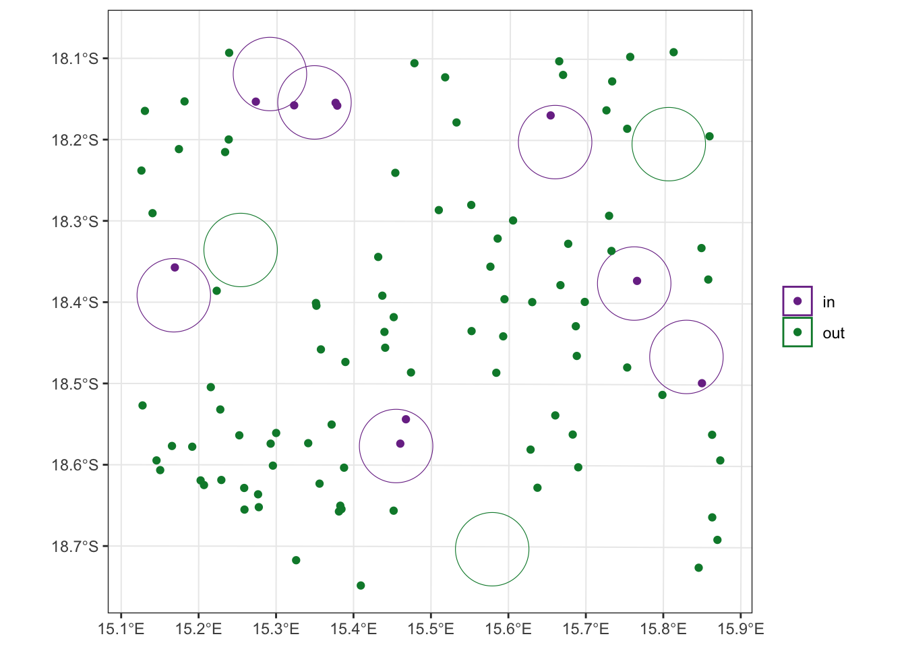

Shapefile_buffer_tutorial
Marie Gilbertson
2023-06-26
Preamble
What this code does:
- Demonstrates making and exporting a shapefil, reading in a shapefile, adding buffers around points in the shapefile, and testing if locations fall within those buffers.
First things first, let’s load the R packages we’ll need.
##### Clear Environment #####
remove(list=ls())
#### load libraries ####
library(sf)
library(ggplot2)
library(RColorBrewer)Simulate data
For simplicity, we’re going to simulate some data. In this case, we’ll simulate some points on a landscape, starting with coordinates that are given in latitude and longitude.
set.seed(1566) # set seed for reproducibility
# generate some random data
data <- data.frame(id = seq(1, 10),
x = runif(10, min = 15, max = 16),
y = runif(10, min = -19, max = -18))
# convert to sf object and plot
data.sf <- st_as_sf(data, coords = c("x", "y"), crs = 4326)
ggplot(data.sf) + geom_sf()Now let’s convert these points to UTM coordinates. I randomly generated these points to fall within the country of Namibia, so we’ll use the EPSG code for UTM zone 33S.
data.utm <- st_transform(data.sf, crs = 32733)
head(data.utm) # we can see that our coordinates have been transformed## Simple feature collection with 6 features and 1 field
## Geometry type: POINT
## Dimension: XY
## Bounding box: xmin: 517698.1 ymin: 7931929 xmax: 580352.4 ymax: 7996611
## Projected CRS: WGS 84 / UTM zone 33S
## id geometry
## 1 1 POINT (517698.1 7966499)
## 2 2 POINT (526794.7 7972660)
## 3 3 POINT (530783.8 7996611)
## 4 4 POINT (561028.1 7931929)
## 5 5 POINT (569591.9 7987344)
## 6 6 POINT (580352.4 7968091)ggplot(data.utm) + geom_sf()
The two plots look the same because ggplot automatically gives latitude and longitude for the axes when plotting sf objects.
Now let’s save this as a shapefile, which could be opened in other geospatial programs. We could save either the lat/long version or the UTM version, but for now, we’ll just save the UTM one.
st_write(data.utm, "UTM_shapefile.shp") # this will save the file into the working directory## Writing layer `UTM_shapefile' to data source `UTM_shapefile.shp' using driver `ESRI Shapefile'
## Writing 10 features with 1 fields and geometry type Point.I’m just showing how to save data so I can also demonstrate how to read in a shapefile in R. By first simulating the data, you can (1) generate the same data used in the rest of the tutorial yourself, and (2) see how to save and read in shapefiles. So, now that we’ve saved a shapefile, we can read that same shapefile in.
shp <- st_read("UTM_shapefile.shp") # the shapefile is in the working directory, so we don't need to provide any additional file path.## Reading layer `UTM_shapefile' from data source `/Users/mariejones/Documents/Word Stuff/Postdoc/Projects/Tutorials/UTM_shapefile.shp' using driver `ESRI Shapefile'
## Simple feature collection with 10 features and 1 field
## Geometry type: POINT
## Dimension: XY
## Bounding box: xmin: 517698.1 ymin: 7931929 xmax: 587461.4 ymax: 7996611
## Projected CRS: WGS 84 / UTM zone 33Shead(shp)## Simple feature collection with 6 features and 1 field
## Geometry type: POINT
## Dimension: XY
## Bounding box: xmin: 517698.1 ymin: 7931929 xmax: 580352.4 ymax: 7996611
## Projected CRS: WGS 84 / UTM zone 33S
## id geometry
## 1 1 POINT (517698.1 7966499)
## 2 2 POINT (526794.7 7972660)
## 3 3 POINT (530783.8 7996611)
## 4 4 POINT (561028.1 7931929)
## 5 5 POINT (569591.9 7987344)
## 6 6 POINT (580352.4 7968091)ggplot(shp) + geom_sf()Hooray! As you can see, the sf package makes it really easy to read in shapefiles. If you’re reading in your own shapefile, you’ll want to make sure your sf object has an assigned coordinate reference system (CRS). We can see from the information we got when reading in the shapefile that ours has a Projected CRS for WGS84/UTM zone 33S. If your own file is missing that kind of information, you’ll want to set it using the st_set_crs() function (here’s an example from Stack Overflow for how to do this).
Create buffers around points
Now that we’ve simulated our data, let’s create a buffer around each point. Our buffers will be circles with a 5km radius, centered on each point in our dataset. Because our data is in UTMs, that means that our distance units are in meters.
buff <- st_buffer(shp, dist = 5000) # 5km = 5000m
head(buff)## Simple feature collection with 6 features and 1 field
## Geometry type: POLYGON
## Dimension: XY
## Bounding box: xmin: 512698.1 ymin: 7926929 xmax: 585352.4 ymax: 8001611
## Projected CRS: WGS 84 / UTM zone 33S
## id geometry
## 1 1 POLYGON ((522698.1 7966499,...
## 2 2 POLYGON ((531794.7 7972660,...
## 3 3 POLYGON ((535783.8 7996611,...
## 4 4 POLYGON ((566028.1 7931929,...
## 5 5 POLYGON ((574591.9 7987344,...
## 6 6 POLYGON ((585352.4 7968091,...## plot buffers with points
ggplot() + geom_sf(data = buff, fill = "transparent") +
geom_sf(data = shp) + theme_bw()That’s looking great! We can also do a quick plot of just the buffer geometry to check our work. In this case, we’re doing a “sniff test” to see if it looks like our buffers to, in fact, have a radius of 5km (i.e., a diamter of 10km). Plus, since we know that the area of a circle = pi*r^2, we can use sf to calculate the areas of our buffers, then do a little math to make sure our radii are all 5km (i.e., 5000m).
plot(st_geometry(buff), axes = T)sqrt(st_area(buff)/pi) # these are in meters## Units: [m]
## [1] 4998.858 4998.858 4998.858 4998.858 4998.858 4998.858 4998.858 4998.858 4998.858 4998.858There’s a little rounding error, but it looks good!
Determine if points are within buffers
Next, we’re going to test if a set of data points are within our buffers. It doesn’t make sense to do this with the points we first simulated, because those are obviously within our buffers. Instead, we’ll simulate some new data. To avoid having to do more coordinate conversions, this time, we’ll simulate data in our UTM coordinates from the start. To do so, we’ll use a bounding box to keep our simulated data points within the same coordinate range as our buffers.
box <- st_bbox(buff)
box## xmin ymin xmax ymax
## 512698.1 7926929.2 592461.4 8001611.1We’ll convert that bounding box into an sfc object so we can then draw a random sample of points from that box.
## convert to sfc object
box.sfc <- st_as_sfc(box)
box.sfc## Geometry set for 1 feature
## Geometry type: POLYGON
## Dimension: XY
## Bounding box: xmin: 512698.1 ymin: 7926929 xmax: 592461.4 ymax: 8001611
## Projected CRS: WGS 84 / UTM zone 33S## POLYGON ((512698.1 7926929, 592461.4 7926929, 5...# sample within the bounding box
sim.data <- st_sample(box.sfc, size = 100)
head(sim.data)## Geometry set for 6 features
## Geometry type: POINT
## Dimension: XY
## Bounding box: xmin: 522735.4 ymin: 7946365 xmax: 579810.4 ymax: 7998941
## Projected CRS: WGS 84 / UTM zone 33S
## First 5 geometries:## POINT (537717.5 7959128)## POINT (539718 7992691)## POINT (535991.1 7946365)## POINT (522735.4 7953991)## POINT (579810.4 7998941)Now we’ll do a little data wrangling to assign an ID to each our new points.
sim.data.df <- data.frame(id = seq(1, 100),
x = data.frame(st_coordinates(sim.data))$X,
y = data.frame(st_coordinates(sim.data))$Y
)
head(sim.data.df)## id x y
## 1 1 537717.5 7959128
## 2 2 539718.0 7992691
## 3 3 535991.1 7946365
## 4 4 522735.4 7953991
## 5 5 579810.4 7998941
## 6 6 558178.7 7978787sim.data.sf <- st_as_sf(sim.data.df, coords = c("x", "y"), crs = 32733)
head(sim.data.sf)## Simple feature collection with 6 features and 1 field
## Geometry type: POINT
## Dimension: XY
## Bounding box: xmin: 522735.4 ymin: 7946365 xmax: 579810.4 ymax: 7998941
## Projected CRS: WGS 84 / UTM zone 33S
## id geometry
## 1 1 POINT (537717.5 7959128)
## 2 2 POINT (539718 7992691)
## 3 3 POINT (535991.1 7946365)
## 4 4 POINT (522735.4 7953991)
## 5 5 POINT (579810.4 7998941)
## 6 6 POINT (558178.7 7978787)Now let’s plot our buffers with our new points and see how things are looking.
ggplot() + geom_sf(data = buff, fill = "transparent") +
geom_sf(data = sim.data.sf) + theme_bw()Excellent! Now we can determine which of our simulated points are within our buffers.
pts.in <- st_join(x = sim.data.sf, y = buff, join = st_within, left = FALSE)
pts.in## Simple feature collection with 10 features and 2 fields
## Geometry type: POINT
## Dimension: XY
## Bounding box: xmin: 517841.6 ymin: 7946302 xmax: 589573 ymax: 7992852
## Projected CRS: WGS 84 / UTM zone 33S
## id.x id.y geometry
## 2 2 8 POINT (539718 7992691)
## 11 11 7 POINT (548523.2 7946302)
## 31 31 5 POINT (568982 7990976)
## 36 36 8 POINT (534079.1 7992349)
## 43 43 8 POINT (539942 7992307)
## 60 60 6 POINT (580740.2 7968452)
## 63 63 3 POINT (528863.8 7992852)
## 80 80 1 POINT (517841.6 7970284)
## 96 96 7 POINT (549287.8 7949619)
## 97 97 10 POINT (589573 7954525)Let’s check our work by connecting our “point in buffer” info with the simulated data and buffers. We’ll create a new column in the simulated dataset that indicates if a point is or is not in a polygon (by references the pts.in object). We’ll then do the same thing with the buffer dataset, but in this case, a column that indicates if a buffer does or does not have points within it.
sim.data.sf$in.buff <- ifelse(sim.data.sf$id %in% pts.in$id.x, "in", "out")
head(sim.data.sf)## Simple feature collection with 6 features and 2 fields
## Geometry type: POINT
## Dimension: XY
## Bounding box: xmin: 522735.4 ymin: 7946365 xmax: 579810.4 ymax: 7998941
## Projected CRS: WGS 84 / UTM zone 33S
## id geometry in.buff
## 1 1 POINT (537717.5 7959128) out
## 2 2 POINT (539718 7992691) in
## 3 3 POINT (535991.1 7946365) out
## 4 4 POINT (522735.4 7953991) out
## 5 5 POINT (579810.4 7998941) out
## 6 6 POINT (558178.7 7978787) outbuff$pt.in <- ifelse(buff$id %in% pts.in$id.y, "in", "out")
head(buff)## Simple feature collection with 6 features and 2 fields
## Geometry type: POLYGON
## Dimension: XY
## Bounding box: xmin: 512698.1 ymin: 7926929 xmax: 585352.4 ymax: 8001611
## Projected CRS: WGS 84 / UTM zone 33S
## id geometry pt.in
## 1 1 POLYGON ((522698.1 7966499,... in
## 2 2 POLYGON ((531794.7 7972660,... out
## 3 3 POLYGON ((535783.8 7996611,... in
## 4 4 POLYGON ((566028.1 7931929,... out
## 5 5 POLYGON ((574591.9 7987344,... in
## 6 6 POLYGON ((585352.4 7968091,... inNow we can check our work by plotting everything together.
pal <- brewer.pal(n = 5, name = "PRGn")[c(1, 5)] # we'll use RColorBrewer to create a custom color palette. We only need two colors, but I don't like the less vibrant colors in some of the diverging color palettes, so we'll just take the first and last colors in a 5-color diverging palette.
ggplot() +
geom_sf(data = buff, aes(colour = pt.in), fill = "transparent") +
geom_sf(data = sim.data.sf, aes(colour = in.buff)) +
scale_colour_manual(values = pal) +
theme_bw() +
theme(legend.title = element_blank()) 
It worked! We can see that our points are only purple (“in”) if they fall within a buffer. In addition, we can see that our buffers are only purple (“in”) if a point falls within them. Huzzah!
sessionInfo()## R version 4.2.0 (2022-04-22)
## Platform: x86_64-apple-darwin17.0 (64-bit)
## Running under: macOS Big Sur 11.7.7
##
## Matrix products: default
## LAPACK: /Library/Frameworks/R.framework/Versions/4.2/Resources/lib/libRlapack.dylib
##
## locale:
## [1] en_US.UTF-8/en_US.UTF-8/en_US.UTF-8/C/en_US.UTF-8/en_US.UTF-8
##
## attached base packages:
## [1] stats graphics grDevices utils datasets methods base
##
## other attached packages:
## [1] ggforce_0.4.1 spatstat_2.3-4 spatstat.linnet_2.3-2 spatstat.core_2.4-4 rpart_4.1.16 nlme_3.1-157 spatstat.random_3.1-3 spatstat.geom_3.0-5 spatstat.data_3.0-0
## [10] smacpod_2.5 ape_5.6-2 terra_1.6-41 vembedr_0.1.5 moveVis_0.10.5 move_4.1.8 geosphere_1.5-14 raster_3.6-11 rgeos_0.5-9
## [19] rgdal_1.6-2 doRNG_1.8.2 rngtools_1.5.2 foreach_1.5.2 crawl_2.3.0 lubridate_1.9.2 adehabitatHR_0.4.19 adehabitatLT_0.3.25 CircStats_0.2-6
## [28] boot_1.3-28 MASS_7.3-56 adehabitatMA_0.3.14 ade4_1.7-19 deldir_1.0-6 sp_1.6-0 momentuHMM_1.5.5 RColorBrewer_1.1-3 ggplot2_3.4.0
## [37] sf_1.0-9
##
## loaded via a namespace (and not attached):
## [1] colorspace_2.0-3 class_7.3-20 rstudioapi_0.14 proxy_0.4-27 farver_2.1.1 fansi_1.0.3 mvtnorm_1.1-3 xml2_1.3.3 splines_4.2.0
## [10] codetools_0.2-18 doParallel_1.0.17 cachem_1.0.6 knitr_1.39 polyclip_1.10-0 jsonlite_1.8.3 spatstat.sparse_3.0-0 compiler_4.2.0 httr_1.4.4
## [19] assertthat_0.2.1 Matrix_1.4-1 fastmap_1.1.0 cli_3.6.0 tweenr_2.0.2 htmltools_0.5.3 tools_4.2.0 gtable_0.3.1 glue_1.6.2
## [28] dplyr_1.0.10 smerc_1.7.2 Rcpp_1.0.10 jquerylib_0.1.4 vctrs_0.5.2 av_0.8.3 iterators_1.0.14 lwgeom_0.2-10 xfun_0.35
## [37] stringr_1.5.0 timechange_0.2.0 lifecycle_1.0.3 goftest_1.2-3 scales_1.2.1 spatstat.utils_3.0-1 Brobdingnag_1.2-7 slippymath_0.3.1 parallel_4.2.0
## [46] yaml_2.3.6 curl_4.3.3 memoise_2.0.1 pbapply_1.6-0 sass_0.4.4 stringi_1.7.12 highr_0.9 plotrix_3.8-2 e1071_1.7-12
## [55] gifski_1.6.6-1 rlang_1.0.6 pkgconfig_2.0.3 evaluate_0.15 lattice_0.20-45 tensor_1.5 labeling_0.4.2 cowplot_1.1.1 tidyselect_1.2.0
## [64] magrittr_2.0.3 R6_2.5.1 magick_2.7.4 generics_0.1.3 DBI_1.1.3 pillar_1.8.1 withr_2.5.0 mgcv_1.8-40 units_0.8-0
## [73] abind_1.4-5 tibble_3.1.8 KernSmooth_2.23-20 utf8_1.2.2 rmarkdown_2.16 grid_4.2.0 digest_0.6.30 classInt_0.4-8 numDeriv_2016.8-1.1
## [82] munsell_0.5.0 bslib_0.4.1